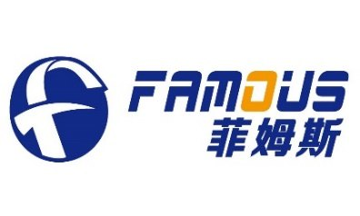
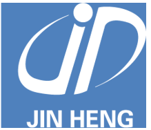
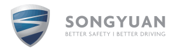
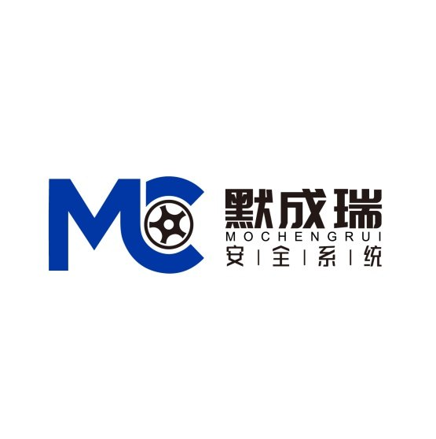

汽车安全件
非标自动化与试验设备
专注汽车安全气囊（DAB/PAB/SAB/CAB/KAB）、安全带（R200.2/R200RP/锁扣）及方向盘装配产线与国标试验设备研发，融合 3D 视觉与工业机器人智能化方案，从工艺设计到整线交付一站完成。
主营业务与工程体系
深耕汽车被动安全零部件行业，熟悉 TS16949 质量体系与 GB14166-2013 试验标准，提供产线、专机与工装夹具全链路开发。
从精密专机与试验机，
到柔性联网整线
全线贯彻工序防错、工装防错与传感器防错，压力-位移曲线与 G 值检测数据实时存储上传，自动打印总成码与包装箱码。
华东—东南客户交付网络 · 空间 GIS
以南京市浦口区江苏可成科技园总部为圆心，基于自研 WGS84 ⇄ EPSG:3857 引擎与真球面测地缓冲区，呈现 8 大真实交付基地的空间分布。
南京崴肯自动化总部
2019年8月成立，2022年获国家级高新技术企业认证（GR202232018123），拥有20余项专利（含3项发明专利）与3项软著，熟悉 TS16949 体系。
含 100–900km 动态球面缓冲区、大圆测距与车间微空间产线平面下钻
三重防错与双向追溯架构演示
直观还原 DAB/KAB 安全气囊线核心逻辑：工序防错、工装防错、传感器防错与零件⇄总成⇄包装箱双向联网追溯。
DAB / KAB 安全气囊线 · 整线联网追溯面板 交互演示数据
支持零件 → 总成正向绑定、总成 → 零件反向溯源与工位异常防错锁止拦截。
四大板块代表交付案例
覆盖安全气囊、安全带生产、国标安全带试验设备与方向盘装配线全系列实拍项目。

DAB / KAB 柔性安全气囊生产线
集成热熔焊接、自动叠袋、饰盖压装、双枪自动拧紧、机器人电性能检测与喇叭按压力检测，支持 D/P/S/C 柔性生产与总成/箱码自动打印追溯。

钢丝绳压铆机（四工位转盘）
压力-位移实时监控曲线存盘、在线 100% 预拉伸测试、压铆后尺寸与到位视觉检测及 OK/NG 自动分拣。

安全带锁扣倍速链生产线
超声波焊接/自动拧紧罩壳、插入力/打开力/导通检测、漏焊检测、大族激光打标与自动拔线束一体化集成。




要上一条新产线，
或定制汽车安全件试验设备？
质量第一、用心为客户着想，直接联系杨云峰总经理（微信同号）交流工艺与节拍方案。
138 5153 2506